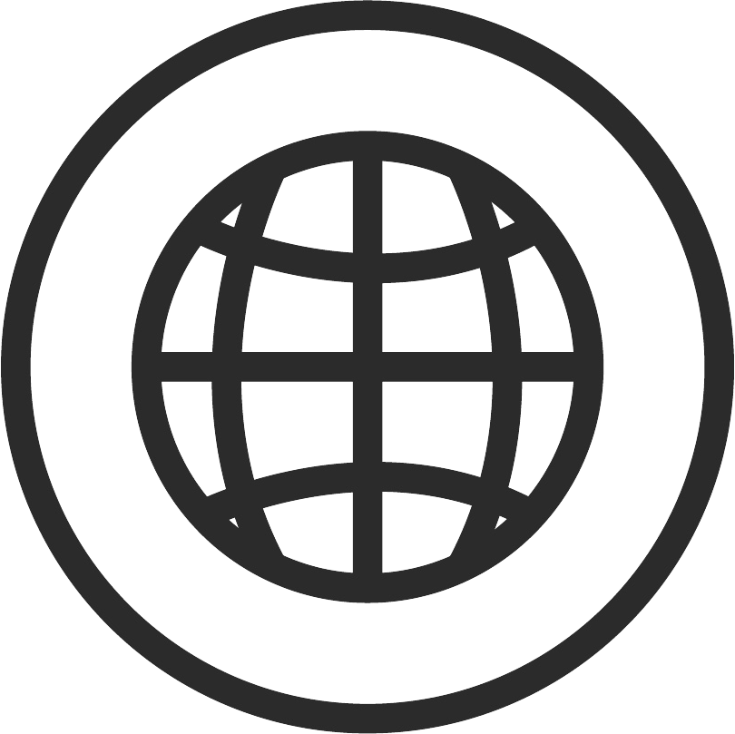
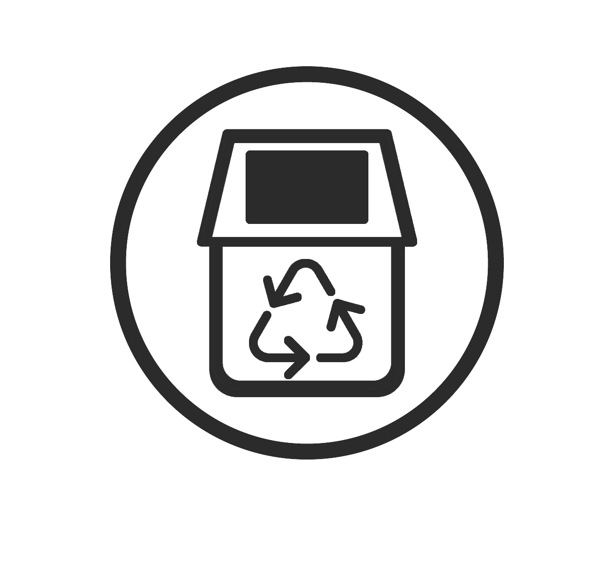

Aqui você pode encontrar o ponto de reciclagem mais próximo da sua localização, ou descobrir quais empresas podem buscar seu material reciclável a domicílio. Informe-se sobre o processo de reciclagem, veja o que é aceito em cada ponto de coleta e como separar seus resíduos

Cadastre-se para participar de uma São Paulo mais sustentável! Mostre que você está reciclando para que possamos trazer benefícios para você. Quanto mais reciclarmos melhores serão os benefícios oferecidos.
Temos máquinas de reciclagem espalhadas por São Paulo! Localize a máquina mais próxima de você Você insere seu material reciclável como garrafas pet, latinhas, garrafas de vidro e acumula crédito social.
Viabilizar aos cidadãos de São Paulo uma melhor qualidade de vida através da facilidade em localizar pontos de reciclagem para que possam utilizá-los
Incenivar o cidadão de São Paulo a reciclar seu lixo
Pretendemos ser a central de informações sobre pontos de coleta seletiva da cidade de São Paulo e assim aumentar a porcentagem de lixo reciclado
Através da disposição organizada das informações sobre pontos de coleta, buscamos tornar mais simples o processo de reciclagem, para assim promover a cooperação de todos os cidadãos na busca por uma melhor qualidade de vida.
Trazemos uma solução de sustentabilidade para São Paulo, usando tecnologia, podendo assim contribuir para a conscientização da população e das organizações, propiciando a recuperação do impacto da não reciclagem que afeta o meio ambiente e o bem-estar dos cidadãos.
A cidade de São Paulo gera 18 mil toneladas de lixo diariamente. Só de resíduos domiciliares são coletadas 10 mil toneladas por dia.
A Capital Paulista é a líder brasileira na geração de resíduos sólidos, cada cidadão gera em torno de meia tonelada de lixo por ano, 40% de todo esse lixo é descartado incorretamente e menos de 10% é reciclado.
“Muito dos materiais recicláveis são descartados junto com os que não são recicláveis e com isso há uma contaminação dos materiais bons” ABRELPE
São Paulo enfrenta um grande desafio em relação à gestão de resíduos sólidos, com altas quantidades de lixo sendo geradas diariamente e pouca reciclagem sendo realizada.
Vamos tornar São Paulo uma cidade mais sustentável e ambientalmente responsável !